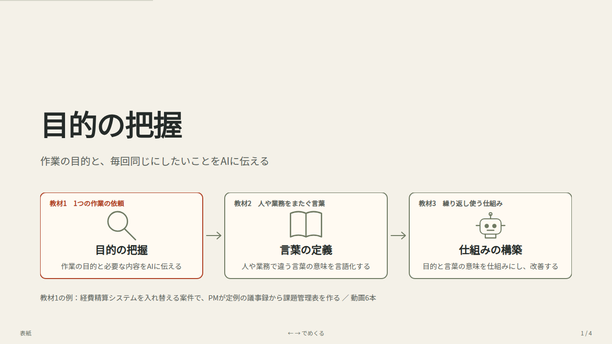
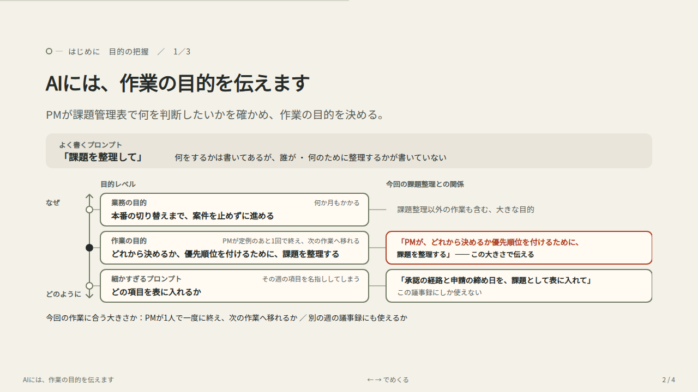

以前のデザインの実物
14枚の旧版より後の修正版も見つかりました。最初に「対応事項へ題材を変え、元の図を活かして修正した版」を表示します。保存されていた図の関数から再描画したものです。旧14枚版も選べます。
2026年10月10日の「はじめに」も見る




元の図には、案件・業務・作業の関係、会議の記録、人物、具体的な出力、教材を通じた変化が描かれています。今回の案では、その関係や変化の表現を十分に引き継げていませんでした。
承認済みA案を正式版へ反映しました。変更前の12枚に対して、ポータルとサポート体制の2枚を追加した全14枚です。
資料の閲覧ページへ戻る14枚の旧版より後の修正版も見つかりました。最初に「対応事項へ題材を変え、元の図を活かして修正した版」を表示します。保存されていた図の関数から再描画したものです。旧14枚版も選べます。


元の図には、案件・業務・作業の関係、会議の記録、人物、具体的な出力、教材を通じた変化が描かれています。今回の案では、その関係や変化の表現を十分に引き継げていませんでした。
企画書の「提供するもの」「サポート体制」と三段階の図を使った3案です。A案を採用し、正式版へ反映しました。下の比較で全14枚の変更前後を確認できます。ここには比較した3案を残しています。
／
図の出典：企画書の提供するもの・サポート体制。配色と部品を再利用しています。
新しい7枚構成の方針に沿って、内容1〜4枚目の図と原稿を修正しました。今回は4枚目が確認対象です。内容5枚目以降はまだ従来の10枚構成です。承認の段階を取り違える設定に更新した構成案・原稿案を下で確認できます。表紙とオリエンテーション、動画・音声は今回更新していません。
表紙の読み上げ：「はじめに。共通の題材と、教材1〜3の学習の流れ。」
現行の動画・音声（今回の修正は未反映） ／ はじめにの動画（MP4） ／ 全スライド一覧
今回は、承認の段階を取り違えた設定に構成案と原稿案を更新しました。描画済みの変更後スライドは内容1〜4枚目で、内容5枚目以降の図はまだ従来版です。構成案と、図・原稿の各枚を順に確認します。
上長承認と経理承認がある架空の経費精算システムで、担当タスクには「承認後は変更不可」と書かれています。開発者は経理承認後と理解しましたが、本来は上長承認後から申請者の直接変更を禁止する仕様です。承認フローと既存コードを照合すれば、確認できます。
この理解をAIに伝えたため、実装と作成したテストには同じ取り違えが残りました。AIと人によるレビューでも、本来の状態との違いを見逃しました。今回の案件の事例として説明します。
| 項目 | 内容 |
|---|---|
| 伝えること | 既存メンバーと新しい開発者、参照する仕様・コード、AI活用の目的を示す。 |
| 図で示す関係 | 既存の人物・チーム境界・資料アイコンを維持する。下の枠で、品質を満たして開発完了までの時間を短くしたいという目的を示す。 |
| 次へのつながり | どんな作業を、AIでどう進めたのか。 |
| 制作状況 | 今回の確認対象 |
ここからは、三つの教材で共通して使う題材を紹介します。経費精算システムを刷新する、架空の案件です。
図の左が、この案件のチームです。既存システムを知るメンバーに、新しく開発者が加わりました。開発担当者のほかに、経費精算の業務を知る担当者と、案件を管理するプロジェクトマネージャーやプロジェクトリーダーがいます。
右には、チームが参照する仕様書、既存コード、開発手順を示しています。新しく加わった開発者も、これらを確認しながら作業します。
このチームでは、実装だけでなく、レビューやテストにもAIを活用します。AIが作ったコードやテストは開発者自身も確認し、ほかの担当者もレビューやテストを行います。
目指しているのは、必要な品質を満たしたうえで、開発を完了するまでの時間を短くすることです。コードを早く作るだけでなく、確認や修正も含めて、開発を速く進めたいわけです。
このあと、新しく加わった開発者が、申請内容を変更する機能を担当します。AIで実装やレビューを進めると、開発の進み方はどう変わったのでしょうか。次のページで見てみましょう。
| 項目 | 内容 |
|---|---|
| 伝えること | 開発者は「承認後は変更不可」という条件を把握し、AIに伝えて実装とテストを進める。作成した単体テストとAI・人のレビューを終え、短時間でレビュー承認まで到達する。 |
| 図で示す関係 | 担当する申請変更画面とAPI、同じ大きさで重なるコード・テスト・説明、AIと人のレビューを順に示す。作業条件「承認後は変更不可」を置く。レビュー承認後にマージし、CIで連携テストを行う。開発完了とは区別する。 |
| 次へのつながり | 作成したテストも通り、レビューも承認された。その後の確認で何が起きたのか。 |
| 制作状況 | 今回の確認対象／図と原稿を反映済み |
新しく加わった開発者は、申請内容を変更する画面とAPIを作り直します。担当タスクには「承認後は変更不可」と書かれています。開発者はこの条件も確認し、自分が理解した内容をAIに伝えて実装を進めました。
図の左です。AIを使うと、コードだけでなく、単体テストや変更の説明も短時間で作成できました。開発者自身も出力を確認し、作成した単体テストはすべて通っています。
中央では、AIがレビューし、人のレビュー担当者もコードやテストを確認しています。AIからの指摘はなく、人のレビューも承認されました。右に示したように、実装からレビュー承認まで、短時間で進んだのです。
レビュー承認後、変更を取り込みます。すると、この案件で用意している自動テストが動き、申請の変更機能と承認処理の連携を確認します。レビュー承認まで速く進んだ変更は、このテストも通ったのでしょうか。次のページで見てみましょう。
| 項目 | 内容 |
|---|---|
| 伝えること | 上長承認後・経理承認前の申請を変更できる不具合が発覚する。変更制限自体はあるが、制限を始める状態が違う。修正・再テスト・再レビューで、期待したほど開発全体の時間が短くならなかった。 |
| 図で示す関係 | 左に本来の制限、右に今回の実装を独立した枠で配置する。同じ申請→上長承認→経理承認と変更可否をそれぞれに置く。上長承認後の変更可否だけを強調し、下には同じ金額変更操作に対する保存結果を対比する。 |
| 次へのつながり | 「承認後は変更不可」を確認していたのに、なぜ制限する状態が違ったのか。 |
| 制作状況 | 今回の確認対象／図と原稿を反映済み |
レビューを承認し、変更を取り込むと、自動テストが動きます。この案件では、申請から承認までの処理を通して確認しています。そこで、承認後の申請を変更できてしまう不具合が見つかりました。
この案件の経費精算には、上長の承認と、その後の経理担当者の承認があります。左が本来の仕様です。上長が承認した時点から、申請者がその申請内容を直接変更できないようにします。
ところが、右の実装では、変更を禁止するのは経理承認後からでした。上長承認が終わり、経理承認はまだの申請については、変更して保存できてしまったのです。
左右の下に、同じ操作をした結果を示しています。上長が承認した申請の金額は、一万二千円です。自動テストで申請者による変更を試すと、本来は保存できず、一万二千円のままになるはずでした。しかし、実際には一万八千円に変更して保存できてしまいました。
作成した単体テストは通り、AIと人のレビューも終わっていました。それでも、この状態を確認する既存の自動テストで不具合が発覚しました。単体テストやレビューでも発見できた内容を、見逃していたわけです。
実装を修正し、テストとレビューをやり直します。修正を取り込んだ後の自動テストでも、問題が解消したことを確認します。レビュー承認までは速く進んでも、その後に修正と再確認が必要になり、開発全体は期待ほど速く進みませんでした。
「承認後は変更不可」という条件は確認していたのに、なぜ制限する状態が違ってしまったのでしょうか。次は、その理解が実装やレビューでどう扱われていたかを振り返ります。
| 項目 | 内容 |
|---|---|
| 伝えること | 開発者は経理承認後と解釈し、AIはその条件で実装・テストを作った。レビューでも元の業務ルールとの照合が不十分で、同じ取り違えが残った。大量の成果物と、AIの指摘確認に偏ったレビューを背景として示す。 |
| 図で示す関係 | 本来の業務条件と、開発者が理解してAIに伝えた条件を別領域に置く。作業側は実装・テスト、AIレビュー、人のレビュー承認を接続する。下に、成果物の増加とAIの指摘中心の確認、業務条件の照合不足を示す。 |
| 次へのつながり | この一件を直すだけでなく、必要な業務条件を満たす開発にするには、どこから考えればよいか。 |
| 制作状況 | 今回の確認対象／図と原稿を反映済み |
なぜ、上長承認後の変更を見逃したのでしょうか。開発者は、「承認後は変更不可」という担当タスクの説明を、経理担当者の承認が終わった後のことだと理解していました。AIにもその条件を伝えたため、実装も単体テストも、その理解に沿って作成されました。
本来の条件を確認する情報はありました。左にある承認フローの説明や既存コードを照合すれば、上長承認後から変更を制限することが分かります。開発者も資料を確認していましたが、この点を照合しきれていませんでした。
右のように、AIが作った実装とテストは、開発者が伝えた条件に沿っています。AIレビューからも指摘が出ず、人のレビューでも承認されました。しかし、実装やテストで使った承認の意味が、本来の業務条件と同じかは、確認が不十分だったのです。
下の枠は、そのときの確認の状況です。この案件では、一度に確認するコードやテスト、説明が増え、どの業務条件を何で確かめたかが把握しにくくなっていました。人もコードやテストを見ていましたが、AIの変更説明やレビュー結果を中心に読むようになり、AIの指摘が残っていないかを確認することに偏ってしまいました。
AIが指摘しなかったことと、必要な業務条件を満たすと確かめられたことは、同じではありません。今回の状態判定を直すだけでなく、ほかの変更でも必要な条件を確認できるようにするには、何から考えればよいのでしょうか。次は、作業の目的から考えます。
| 項目 | 内容 |
|---|---|
| 伝えること | レビューの目的を、AIの指摘確認だけでなく、変更が業務上必要な条件を満たすか確かめることとして考える。その目的から、業務条件・実装・テスト結果の対応が必要だと考える。 |
| 図で示す関係 | AIの指摘確認という作業から目的へ戻り、必要な業務条件・実装・テスト結果へ具体化する往復を既存の縦方向の図で示す。「承認後は変更不可」を必要な条件の例に置く。 |
| 次へのつながり | 必要な条件を挙げても、「承認後」という言葉の意味が違えば、同じものを確認したことにならない。 |
| 制作状況 | 構成・原稿案を更新／図は未制作 |
教材1では、作業の目的から、必要な内容を考えます。今回のレビューなら、AIの指摘が残っていないかを確認するだけで、目的を果たせるでしょうか。
変更した機能が業務ルールを守って動くかを確かめたいなら、必要な業務条件と、それに対応する実装やテスト結果を確認する必要があります。目的を考えると、レビューに含める内容も変わります。
ここでは、今回の状態判定を直すという一つの対応から戻り、ほかの変更にも使うレビューでは何を確かめたいのかを考えます。目的は大きくすればよいのではなく、どの作業で使いたいかに合わせて考えます。
ただ、必要な条件として「承認後は変更不可」と挙げても、今回の開発者と同じように、別の状態を思い浮かべるかもしれません。何を確認するかに加えて、その言葉が何を指すかも明確にする必要があります。ここが、教材2につながります。
| 項目 | 内容 |
|---|---|
| 伝えること | 条件を挙げるだけではなく、「承認後」がどの状態を指すかを明確にする必要を示す。承認以外にも、操作する人・対象データ・操作の範囲を確認する考え方へつなげる。 |
| 図で示す関係 | 「承認後は変更不可」を上長承認と経理承認の状態図に対応させる。本来は上長承認後から申請者の直接変更を禁止する関係を示す。仕様・既存コードで確かめる関係も残す。 |
| 次へのつながり | 明確にした意味と範囲を、AIの実装・レビュー・テストでもどう使うか。 |
| 制作状況 | 構成・原稿案を更新／図は未制作 |
教材2では、条件を表す言葉の意味と、当てはまる範囲を明確にします。今回の「承認後」は、上長承認後なのか、経理承認後なのか。この違いによって、変更を禁止する状態が変わります。
そこで、承認フローの説明や既存コードと照合し、今回の業務でどの状態を指すのかを確かめます。分からない点は、業務を知る担当者に確認します。AIがもっともらしく説明した意味を、そのまま仕様として使うわけではありません。
承認の段階だけでなく、誰の、どのデータに対する、どの操作を制限するのかも確認します。今回は、上長承認後の申請について、申請者による申請内容の直接変更を禁止する条件です。
教材1で必要な条件を考え、教材2でその意味と範囲を明確にします。では、この内容をAIの実装やレビュー、テストでも使えるようにするには、どうすればよいでしょうか。
| 項目 | 内容 |
|---|---|
| 伝えること | 条件の意味と範囲を共通の参照情報と役割別の手順へ反映する。AIの実行結果を元の仕様やコードと照合し、条件の抜けと根拠を人が確かめる。最後は教材1へ進む。 |
| 図で示す関係 | 共通の参照情報から開発・レビュー・テストのAgentとSkillへつながる既存図を使用する。「上長承認後から変更不可」と実装・テスト結果の対応を示す。AI同士で確認しただけでは完了にしない。 |
| 次へのつながり | まず、実装やレビューを何のために行うか。教材1「目的の把握」から考える。 |
| 制作状況 | 構成・原稿案を更新／図は未制作 |
教材3では、考えた目的と条件を、AIが使える情報と手順にします。共通して参照する仕様や業務条件と、開発、レビュー、テストで行う手順を用意します。
エージェントは作業を実行するAIで、スキルには再利用する条件や手順を記録します。例えば、今回の上長承認後の変更制限について、開発では対応する実装を示し、レビューでは元の仕様と変更内容を照合し、テストでは対象となる状態の実行結果を示します。
その結果を、人も確認します。AIが挙げた条件だけでなく、必要な条件自体に抜けがないか、示されたコードやテスト結果が根拠になっているかを確かめます。不足があれば、参照する情報や手順を改善します。
三つの教材では、目的を考え、言葉の意味と範囲を明確にし、それをAIの作業で使う方法を学びます。まずは、実装やレビューを何のために行うのか、その目的から必要な内容を考えていきましょう。教材1「目的の把握」から始めます。